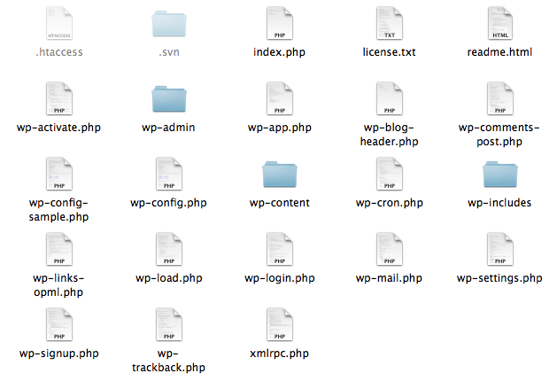

Your browser doesn't support the features required by impress.js, so you are presented with a simplified version of this presentation.
For the best experience please use the latest Chrome, Safari or Firefox browser.
Moving Beyond the Codex
Learning WordPress from Itself
Presented by Erick Hitter @ Oomph, Inc.
Email: erick@oomphinc.com
@ethitter
Skype: ehitter.oomphinc
Who Am I?
(In other words, why should you care about anything I have to say)
WordPress developer at Oomph, Inc.
WordPress 3.3 Core Contributor
WordCamp Boston Organizer
Plugin Author
Why Are You Here?
- Core can be confusing to navigate
- Core is intimidating at first
- You've encountered the limits of the Codex
- Googling for tutorials and tips isn't cutting it anymore
- You're curious (I hope)
Core?

Basic Structure
- /wp-admin/
- /wp-content/ (Your stuff, not relevant to this conversation)
- /wp-includes/ (We're going to focus on this)
- Plus a bunch of files (these aren't really relevant to this conversation)
PHPDoc
- Inline documentation appearing before many functions.
- Specifies the arguments a function accepts, the other WordPress functions it uses, and its possible end results.
- Powers the documentation found at http://phpdoc.wordpress.org/.
- Completeness varies. Older functions have either incomplete or no PHPDoc.
PHPDoc
/**
* Display the post content.
*
* @since 0.71
*
* @param string $more_link_text Optional. Content for when there is more text.
* @param bool $stripteaser Optional. Strip teaser content before the more text. Default is false.
*/
function the_content($more_link_text = null, $stripteaser = false) {
$content = get_the_content($more_link_text, $stripteaser);
$content = apply_filters('the_content', $content);
$content = str_replace(']]>', ']]>', $content);
echo $content;
}
Danger, Will Robinson!
You may encounter functions whose names are prefixed with an underscore. You may even be tempted to use them.
Don't.
The underscore prefix is WordPress' convention indicating an internal function not intended for public consumption.
wp-admin
- Has its own
/includes/ directory.
- Anything exclusively intended for the admin is here:
add_meta_box(), remove_meta_box()WP_List_Tableadmin-ajax.php
- Sometimes, things are here that probably shouldn't be:
wp_insert_link(), wp_update_link(), wp_delete_link()
(Convention says they don't belong. More on that soon.)
wp-admin
Basically, if it pertains to the admin interface, it's in wp-admin.
The underlying functions that handle interactions with the database, however, are in wp-includes.
wp-admin media
- The functions that render the Media Library and provide for media management are in wp-admin.
media.phpmedia-new.phpmedia-upload.phpincludes/media.php
- The functions that manipulate and retrieve media are in wp-includes.
wp-admin meta boxes
add_meta_boxes is an action in wp-admin/edit-form-advanced.php.add_meta_box is a function in wp-admin/includes/template.php.save_post is an action in wp-includes/post.php.
Again, presentation is in wp-admin, data handling is in wp-includes.
wp-includes
- 103 files
- Three broad categories
- Classes:
class SimplePie, class WP_Http, class WP_Error
- Templating:
the_title(), the_content()
- Functional:
get_the_title(), get_the_content()
wp-includes classes
- Files all start with class-
- Most have wrappers found in the other two types of files (templating and functional).
- For this reason, there's often no reason to directly reference the classes herein. For example:
class-simplepie.phpfetch_feed()
- This helps explain why classes aren't always in one of the prefixed files.
wp-includes templating
- Unlike classes, these files generally end with -template
- Two broad categories (I'll explain in a bit):
- Output (echo) something:
the_title(), the_content()
- Load something from the theme:
get_header(), get_sidebar()
- Includes everything in the Template Tags section of the Codex.
wp-includes functional
- Generally, these functions return something.
- They may retrieve something, manipulate something, or specify something.
- Examples:
get_post()esc_attr()get_default_feed()
- Broadly encompasses the functions defined in the Function Reference portion of the Codex.
A note on WordPress convention
- Any function that starts with the_ echoes the data it receives from its get_the_ counterpart, which returns its data.
- The the_ version can only be used in The Loop, whereas its counterpart accepts the ID of an object.
- For example:
the_content() and get_the_content()
So how about some specifics?
With the high-level overview out of the way, let's talk details (relatively speaking).
Some important files to know about
formatting.phpquery.phppost.phppost-template.phppluggable.php
formatting.php
Joking aside, data validation and sanitization is essential. Thankfully, WordPress helps out immensely.
sanitize_text_field()sanitize_user()sanitize_title()sanitize_title_for_query()sanitize_sql_orderby()sanitize_html_class()esc_attr()esc_html()esc_url()esc_url_raw()
query.php
- Contains the
WP_Query class, or more simply put, code related to The Loop.
- To reiterate, this file holds the related functions used to instantiate The Loop and interact with the query.
query_posts()setup_postdata()have_posts()the_post()get_query_var()get_queried_object(), get_queried_object_id()is_home() et al
get_post() and get_posts(), however, are in post.php
post.php
- As mentioned,
get_post() and get_posts() are in this file.
- Contains all of the functions used to get information about a post, but not those needed to get the post itself. For example,
get_children()get_post_format(), has_post_format()get_post_status()
- Functions for manipulating a post's attributes are also here.
set_post_status()add_post_meta(), update_post_meta()
post.php
- Also contains
register_post_type() and register_post_status().
- Notice, however, that none of the functions used to retrieve or display a post's data (title, content, date, etc), are in
post.php. Those are all in post-template.php.
post-template.php
- As previously discussed, the -template suffix indicates that this file contains functions that display something from a post to the end user.
- Here you'll find
the_content() and get_the_content(), the_title() and get_the_title(), the_excerpt() and get_the_excerpt(), and so on.
- One exception sure to cause some grief, however, is any function pertaining to post thumbnails (featured images). Those are in
post-thumbnail-template.php.
More naming conventions
bookmark.php and bookmark-template.phpcomment.php and comment-template.php
And now some exceptions
-
Users/Authors
author-template.phpcapabilities.phpuser.php
-
Taxonomies
category.php - covers categories and tagscategory-template.php - also covers categories and tagstaxonomy.php - holds underlying functions used by the two aforementioned files, as well as everything pertaining to custom taxonomies
link-template.php
- Some functions related to getting the URL of something in WordPress is in here.
get_permalink()the_permalink()get_author_feed_link()get_adjacent_post()
-
Many link functions, however, are in the file the links correspond to.
get_category_link() in category.phpget_term_link() in taxonomy.phpget_author_link() in author-template.php
link-template.php
- Thanks to the functions herein, there's almost never any reason to hardcode a link or build a link manually.
- Using these API functions ensures that if your site's URL, directory location, or permalink structure changes, your links will follow.
Catch-all files
- functions.php
wp_list_filter()wp_list_pluck()wp_parse_args()
- general-template.php
get_header()get_sidebar()single_*_title()
pluggable.php
- On countless occasions, I've struggled to locate a function I know exists. Almost without fail, it's in
pluggable.php.
- The functions herein, such as
get_userdata(), are defined in such a way that plugins can replace them.
- This is useful, for example:
- to provide an alternate login system;
- to replace
wp_mail()'s PHP mailer with an SMTP solution;
- to modify comment notifications;
- or to supplant PHP's default avatar system, Gravatar.
ack!
Faster than grep (it's meant for programmers)
http://betterthangrep.com/
$ ack "class WP_User"
wp-admin/includes/class-wp-users-list-table.php
10:class WP_Users_List_Table extends WP_List_Table {
wp-admin/includes/deprecated.php
297:class WP_User_Search {
wp-includes/capabilities.php
359:class WP_User {
wp-includes/user.php
335:class WP_User_Query {